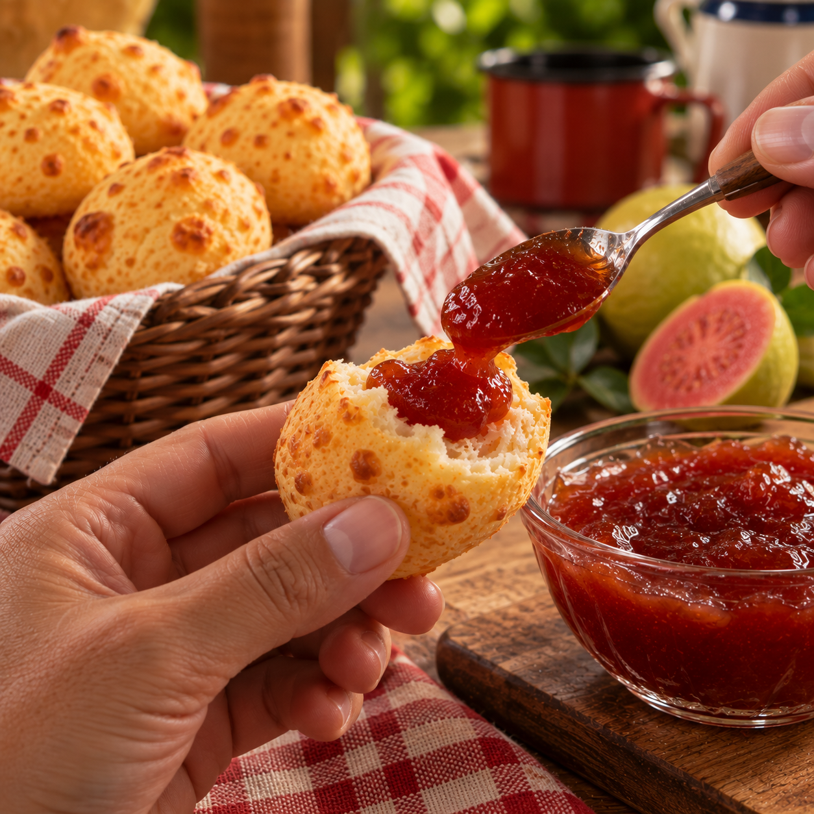

LINHA GOURMET
Recheio de Goiabada
A versão com recheio de goiabada da Linha Gourmet combina o sabor do pão de queijo Sabor & Minas com um toque adocicado de goiabada.
ONDE ENCONTRAR →O PRODUTO
Linha Gourmet
A versão com recheio de goiabada da Linha Gourmet combina o sabor do pão de queijo Sabor & Minas com um toque adocicado de goiabada.
OUTROS SABORES
Conheça a linha
LINHA GOURMET